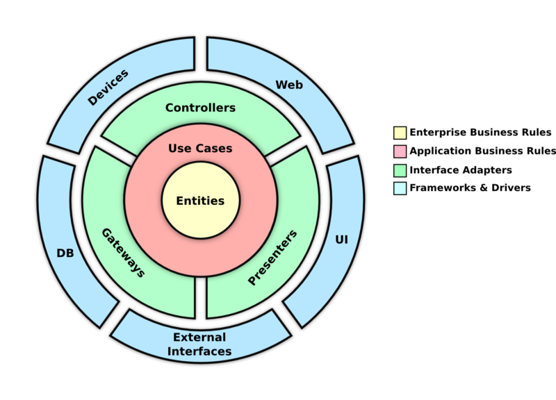

Clean Framework is a toolkit of classes and implementations that help any developer create a layered architecture on any app, following the principles of Clean Architecture from Uncle Bob (Robert Martin).
To understand the components, first we have to talk about the layers, which are just a way to group your code to avoid interdependencies and to separate concerns.
The following diagram explains how the Clean Architecture proposes the implementation of the layers.

The idea of layering the architecture to separate the domain logic from the implementation details is not recent, and some other approaches have also been proposed (like the Hexagonal Architecture). Bob Martin took good ideas from the existing proposals, so some of the terms may seem familiar.
The core of your app should exist within this layer. Here we have Entity instances that hold the state of all your features. These entities are immutable and should be free of any external code, they should not care about databases, UI, or services. If you are familiar with Domain Driven Design, this is considered your Domain data.
The Use Case is an object that handles the data in the Entities and redirects the flows of data. Use Cases will hold most of the business logic of your features.
Use Cases handle two classes, Input and Output, which move data inside or outside respectively, they are very similar to DDD Events. The next layer can only use these components to send and receive data from the Entities. Since they are simple PODOs (Plain Old Dart Objects), they are completely agnostic from the implementation of the outside layer, and this means the Use Case will usually interact with any type of object without worrying about the details.
To interact with the Outputs and Inputs, Use Cases use requests and filters, and these interactions can be synchronous or subscriptions.
The goal of this layer is to translate the Inputs and Outputs from the Use Case into more specific messages for specific destinations. These components have a similar function than the BDD Adapter. We have to main components, the Presenter and the Gateway
It's job is to translate Outputs into ViewModels, which are contain data and behavior (in the form of callbacks). This class will hold most of your UI logic that is not business related, like navigation.
Presenters will interact with providers of Use Cases to subscribe to a specific Output, so when that output gets updated, we can schedule a refresh on the UI side. Once the Presenter receives the updated Output, it will create a new View Model to be processed by the UI.
When you need external data from sources like REST servers, databases, hardware, cache, etc. Use Cases will send requests with an specific Output. This message will be listened by a Gateway, which translates the Output data into a request that can be processed by the next layer.
There are two types of Gateway, depending on how you need the response to be delivered. The base Gateway class handles requests and waits for a response on the same interaction, blocking the execution until a response or an error is received.
The other type is the WatcherGateway, which will create a subscription. Once the result is received and sent back to the UseCase, it will keep listening for subsequent responses, which are sent to the Use Case through the Input listener.
This is where code from libraries and dependencies interacts with your features. Waits for Requests to happen and then process them depending on its type. Clean Framework include some ready-to-use default implementations to work with Firebase, GraphQL and REST services.
To start using the Clean Framework components, you need to add the library on the pubspec.yaml of the project. Use the latest version available.
dependencies:
clean_framework: ^1.1.0
We suggest you organize your app into Features, with the assumption that features don't depend on each other. The goal should be to be able to delete a feature completely and don't break any code.
Each feature could be organized in this way:
lib
features
my_new_feature
domain
my_new_feature_usecase.dart
my_new_feature_entity.dart
my_new_feature_outputs.dart
my_new_feature_inputs.
presentation
my_new_feature_presenter.dart
my_new_feature_view_model.dart
external_interfaces
my_new_feature_gateway.dart
Notice that the name of the feature is a prefix for all the files inside. We prefer this naming convention so they are easier to idenfiy on searches, but you are free to follow any convention that suits your need.
The folder structure is also a suggestion, you can add multiple layers if the feature begins to grow and have multiple screens and interactions.